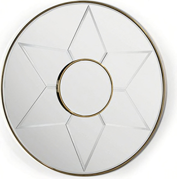

Couleur : or
Forme : rond
Style : Ce miroir est composé d’une structure à double cercles en métal doré, d’un verre miroir à biseaux et comporte un dessin d’étoile.
Époque : contemporain
Cadre : Le miroir est entouré d'un cadre doré très fin.
Hauteur : 120 cm
Largeur : 120 cm
Profondeur : 4 cm
Poids : 10 kg
Date d’acquisition : 2021-02-10
Moyen d’acquisition : achat
Prix d’achat : 1197 €
Commentaire :
Ce miroir fait partie de la collection 2021 de l'enseigne Maisons du monde. Il permet selon le vendeur de donner un coup d'éclat à son intérieur (voir la description complète sur le site de Maisons du monde).
Dans le même style, voir le miroir 22 de la collection.
En mars 2020 le prix du miroir était à 1197 euros
Ce miroir à fixer peut trouver sa place dans toutes les pièces de la maison.